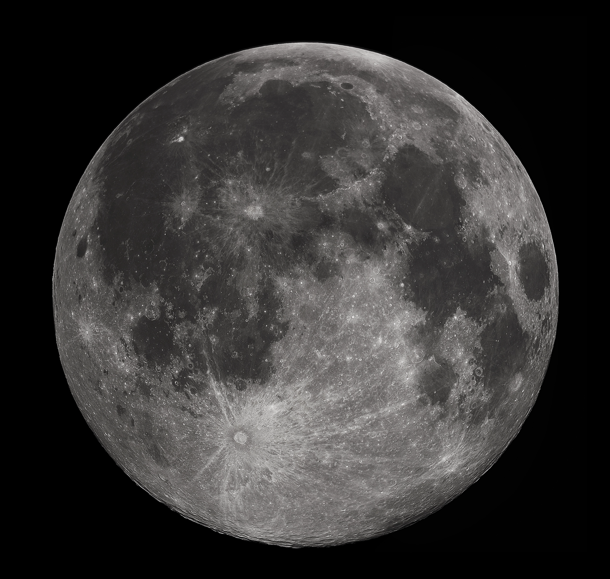

Bulan
Bulan merupakan satu-satunya satelit alami Bumi sekaligus satelit terbesar kelima di Tata Surya. Berdasarkan hipotesis tabrakan masif (Giant Impact Hypothesis), Bulan terbentuk sekitar 4,5 miliar tahun lalu dari puing-puing paska benturan antara Bumi muda dan protoplanet seukuran Mars yang dinamai Theia. Bulan mengorbit Bumi dalam kondisi penguncian pasang surut (synchronous rotation/tidal locking), sehingga periode rotasinya persis sama dengan periode revolusinya (27,3 hari Bumi). Hal ini menyebabkan Bulan selalu memperlihatkan sisi yang sama (sisi dekat) ke arah Bumi. Bulan hampir tidak memiliki atmosfer nyata melainkan eksosfer yang sangat tipis, yang mengakibatkan fluktuasi suhu permukaan yang ekstrem serta pembentukan kawah-kawah dampak meteorit yang bertahan selama berbilang miliar tahun tanpa tererosi oleh cuaca.